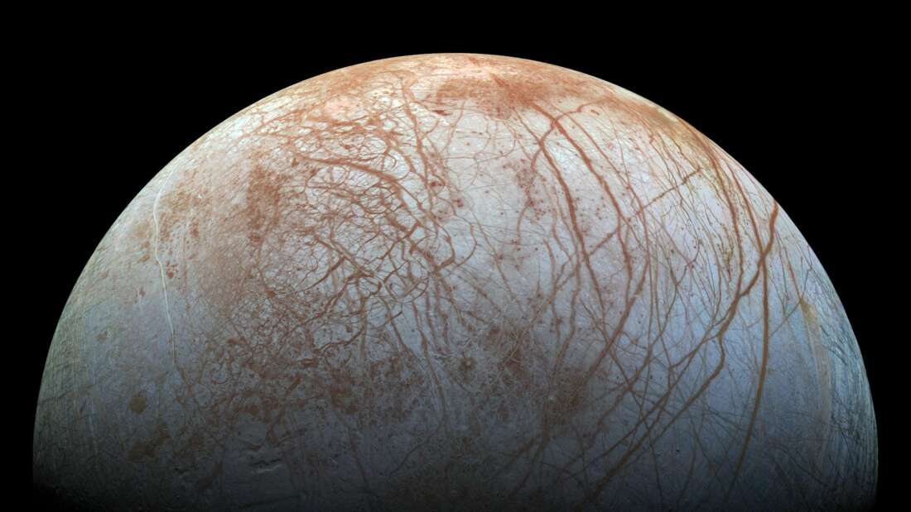

SUPERFÍCIE CONGELADA DO SATÉLITE DE EUROPA SOFRE UMA GRANDE DERIVA POLAR
A superfície do satélite Europa de Júpiter, muito provavelmente experimentou um grande desvio nos últimos 10 milhões de anos, sugere um novo estudo. Seus polos não estão onde eles estavam, e as feições na sua superfície indicam uma rotação de cerca de 70 graus com respeito ao seu eixo rotacional. A superfície tem cerca de 50 milhões de anos e os pesquisadores esperam que esse desvio tenha ocorrido no curso de 12 milhões de anos. Conhecido como um verdadeiro desvio polar, para que isso possa ter acontecido é preciso que a superfície de Europa estivesse completamente separada do interior rochoso repousando exclusivamente sobre um oceano.
A evidência para isso vem de mapas da superfície de Europa feitos pelas sondas Galileo e Voyager.
A superfície de Europa é marcada com fraturas concêntricas que de acordo com os pesquisadores só poderiam ser causadas por uma verdadeira deriva polar. Essas profundas fissuras no gelo, com cerca de 1 a 2 quilômetros de diâmetro e 200 metros de profundidade, também cruzam grandes crateras recentes, o que sugere fortemente que o evento aconteceu nos últimos milhões e anos.
A principal descoberta é que as fraturas associadas com a verdadeira deriva polar em Europa cortam todos os terrenos. Isso significa que esse evento é bem jovem e que a concha de gelo e todas as feições formadas nele se moveram mais de 70 graus em latitude de onde foram formadas. Se isso é verdade, então toda a história registrada da tectônica em Europa precisa ser reavaliada.

“Our key finding is that the fractures associated with true polar wander on Europa cross-cut all terrains. This means that the true polar wander event is very young and that the ice shell and all features formed on it have moved more than 70 degrees of latitude from where they first formed,” lead author Dr Paul Schenk, from the Lunar and Planetary Institute, said in a statement. “If true, then the entire recorded history of tectonics on Europa should be reevaluated.”
Essa hipótese é certamente intrigante e os pesquisadores vão dar um passo além para discutir algumas previsões que podem ser testadas de que a verdadeira deriva polar poderia existir em Europa.
Além de gerar feições tectônicas de alcance global, a verdadeira deriva polar também produziria perturbações de escala global na gravidade e na forma, o que afetaria também a parte interna do satélite de Júpiter.
Para investigar essas previsões, será preciso esperar as próximas missões que vão para aquelas bandas do Sistema Solar. A missão Europa Clipper da NASA e a JUICE da ESA irão explorar o sexto maior satélite do Sistema Solar entre o final da década de 2020 e o começo da década de 2030.
Fonte:
[https://www.iflscience.com/space/europas-icy-surface-may-have-experienced-an-incredible-shift/]